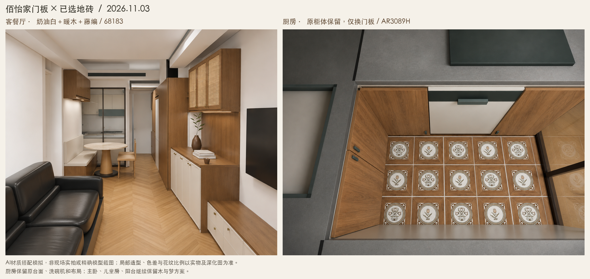

客厅采用奶油白门板、暖木框架与长方形藤编上柜，搭配罗浮威尔68183；厨房保留原柜体、台面、设备和布局，仅换成木色下门板、浅色上门板，地面选郁金香AR3089H。

这是AI材质搭配模拟，不是现场照片或精确模型截图。根据已有住宅模型、用户地砖样板与设计全景制作。局部柜门分格、花纹比例、光线和色差会有偏差；网页中的柜体尺寸也仍需复核。AR3089H单砖暂按300毫米预览。
主卧、儿童房、阳台继续保留木与梦铝柜。既有黑皮沙发和浅色石面餐桌继续保留。厨房原台面不在本次换新范围。
下一步先核对门板色板与实际地砖的搭配，再确认旧柜门尺寸、铰链孔位与百叶通风做法。客厅分格和卡座上方玻璃展示柜以厂家最终深化图为准。